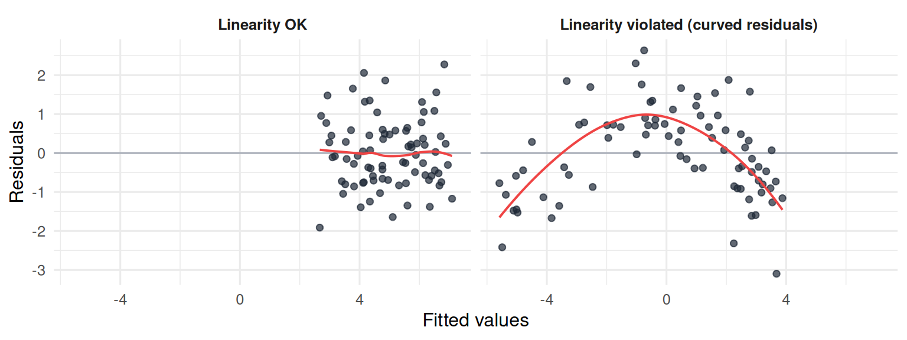
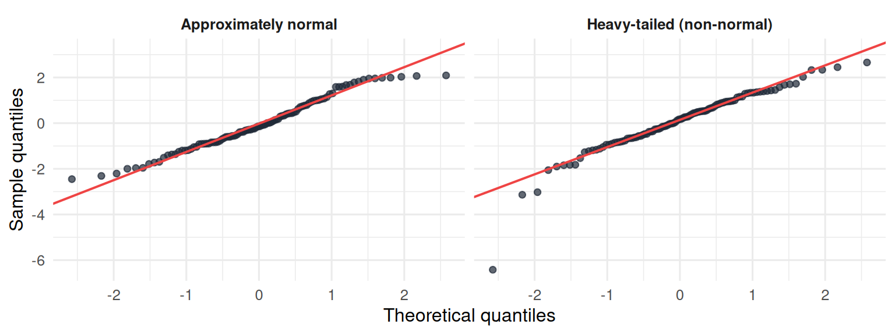
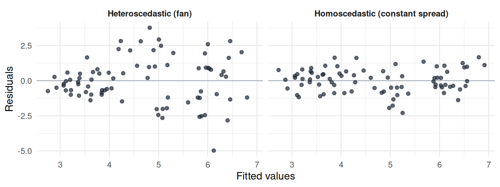

19 Bias, variance, and the assumptions of the linear model
19.1 Overview
The chapters before this one (Chapters 13-18) showed you how to build linear models of increasing complexity: from a single number (the mean) to a single line, to multiple predictors, to interactions. With every step, the model fit the data better and the R-squared went up. That pattern raises an obvious question: is more complexity always better?
This chapter answers two related questions that have been waiting in the background:
- The bias-variance trade-off. Why a more complex model is not automatically better, and why model fit on the dataset you have can be a misleading guide to model quality.
- The assumptions of the linear model. What OLS quietly assumes about your data, when those assumptions matter, and what kinds of problems arise when they are violated.
These are the conceptual foundations of model evaluation. Chapter 20 turns them into diagnostic plots and practical procedures in R.
19.2 Bias: when a model is too simple
The first failure mode of a model is being too simple to capture the real pattern in the data. We call this bias.
Bias is a systematic, predictable kind of error. If the real relationship between two variables is curved (rising sharply at first, then leveling off) and you fit a straight line, the line will consistently overestimate the outcome in some regions of the predictor and consistently underestimate it in others. It does not matter how many participants you collect; the model’s structure (a straight line) cannot represent the truth (a curve), and so the model is biased no matter the sample size.
A useful analogy is throwing darts at a bullseye. Suppose your arm is off-center: every dart you throw lands in roughly the same wrong spot. Your average miss is large, in the same direction, every time. That is bias. Adding more darts (more data) does not fix the problem, because the problem is in your aim, not in your randomness.
In statistical terms, a model with high bias is too rigid. It makes strong structural assumptions about the data that turn out to be wrong. The mean-only model from Chapter 14 has the highest possible bias for our aggression data: it ignores everything about each participant (which condition they were in, how many hours they play, what their trait hostility is) and predicts the same value for all of them. As soon as we added a predictor in Chapter 15, the bias dropped: the model could now make a different prediction for participants with different hours_weekly values. As we added more predictors and the interaction term, bias dropped further: the model could capture more and more of the structure in the data.
19.3 Variance: when a model is too complex
The opposite failure mode is being too complex, in the sense of being too sensitive to the particular data you happen to have collected. We call this variance, in a special sense of the word.
If you fit a very flexible model with many parameters, it can twist and bend to follow every bump and wiggle in your dataset. The trouble is that some of those bumps and wiggles are just noise, not real patterns. They are the random fluctuations that happen because you sampled a finite number of participants, and another sample would have shown different bumps in different places. A very flexible model will twist itself differently for each sample, even if the underlying truth is the same. Its predictions will be unstable across samples.
Back to the darts analogy. Suppose your aim is correct on average, but your hand is very shaky: your throws land all over the board, sometimes far above the bullseye, sometimes far below. On average, you are on target, but no individual throw can be trusted. That is high variance.
In statistical terms, a model with high variance has so many parameters that it fits the noise as well as the signal. This is called overfitting. The model achieves a fantastically low sum of squared residuals on the dataset it was fit to, but those residuals are partly the result of fitting random noise that does not generalize. On a different sample drawn from the same population, the overfit model would perform poorly, because the noise patterns it captured are not real.
The extreme case is the “one-parameter-per-observation” model from Chapter 14: fit a model that has 120 parameters for 120 participants, with each parameter predicting one participant exactly. The training-data fit is perfect (residuals all zero), but the model has memorized the data rather than describing it. It cannot generalize.
19.4 The trade-off
You cannot minimize bias and variance simultaneously. Making a model more complex (more predictors, interactions, more flexible functional forms) reduces bias (the model can capture more real patterns) but increases variance (the model becomes more sensitive to noise). Making it simpler reduces variance but increases bias.
| Too simple | Just right | Too complex | |
|---|---|---|---|
| Bias | High (misses real patterns) | Low | Low |
| Variance | Low (very stable across samples) | Moderate | High (unstable, overfits) |
| Total error | High | Low | High |
| Concrete example | Mean-only model for predicting aggression | A model with the right predictors | A 50-predictor model on 120 participants |
The “just right” point is the one that minimizes the total error, which is the sum of bias-squared and variance (and an irreducible noise term that no model can avoid). Where exactly that point lies is a question without a universal answer; it depends on how much data you have, how much noise the outcome has, and how complex the real pattern is.
Two practical consequences of this picture for your own analyses.
R-squared always increases (or stays the same) when you add a predictor. Even a predictor that is pure random noise will pick up some accidental wiggle in the data and inch the R-squared up. This means you cannot use the basic R-squared to compare models with different numbers of predictors and conclude that “the bigger model is better.” It will (almost) always look better, even if it is overfitting.
Adjusted R-squared partially fixes this. Adjusted R-squared (which you have already seen in summary() output) imposes a small penalty for each additional predictor. It increases only if the new predictor improves the model by more than you would expect from random noise alone. With one predictor the correction is tiny; with many predictors it matters. Adjusted R-squared is one practical answer to the bias-variance trade-off: it does not perfectly identify the optimum, but it punishes overfitting in the right direction. We will compare R-squared and adjusted R-squared more carefully in Chapter 20.
A third tool you should know exists (but we will not use in this book) is cross-validation, in which you fit the model on part of the data and evaluate it on the rest. The model’s performance on the held-out portion is a more honest measure of how well it would generalize. Cross-validation is the workhorse of modern machine learning; for our purposes, adjusted R-squared plus the structural sanity checks of the next section is enough.
19.5 The assumptions of the linear model
Bias and variance describe the model’s structure. There is a second set of considerations, equally important, that concern the data: what OLS quietly assumes about your observations, and what happens when those assumptions are wrong.
A clarification first. The word “assumption” in statistics is not the same as “rule you must follow.” Assumptions are features of the data that, if approximately true, mean OLS gives you trustworthy estimates of slopes and intercepts and (later, in inference) trustworthy standard errors and p-values. If they are violated, the model may still produce numbers, but those numbers can be misleading.
You check assumptions after fitting the model, not before. You fit the model, then ask: “Are the residuals well-behaved? Does the model look like it is doing its job?”
There are four main assumptions of OLS regression. A useful mnemonic for them, due to several statistics textbooks, is LINE:
- Linearity
- Independence
- Normality of residuals
- Equal variance (homoscedasticity) of residuals
Each is described next.
19.5.1 Linearity
What it says. The relationship between each predictor and the outcome, holding the others constant, is linear (a straight line). For multiple regression, the assumption is that the systematic part of the model is linear in the predictors. The residuals capture what is left over.
Why it matters. If the true relationship is curved (for example, the outcome rises with the predictor, plateaus, and then drops), fitting a line will systematically overestimate in some regions and underestimate in others. The model is biased in the sense of the first half of this chapter: its structure cannot represent the truth, no matter the sample size.
How you check it. Plot the residuals against the fitted values from the model. If linearity holds, the residuals scatter randomly around zero across the whole range of fitted values. If linearity is violated, the residuals form a systematic pattern, usually a U-shape or an inverted-U, that tells you what the line is missing.
The left panel shows residuals with no obvious pattern: linearity is approximately OK. The right panel shows a clear inverted-U: residuals are negative for low and high fitted values, positive in the middle. This is the diagnostic signature of a nonlinear relationship that the straight line is missing.
What to do if violated. Consider transforming the predictor (for example, log), adding a polynomial term (such as I(x^2)), or using a model that explicitly handles nonlinear shapes (generalized additive models, for instance). For the kinds of analyses in this book, the practical recommendation is more modest: notice the violation, mention it when reporting results, and acknowledge that a linear model is an approximation of a more complex truth.
19.5.2 Independence
What it says. The residuals of any two observations are independent of each other. Knowing one participant’s residual should tell you nothing about another participant’s residual.
Why it matters. Most of the consequences of violating independence are about inference rather than estimation (we will return to inference in a later section). When residuals are correlated, the model thinks it has more independent information than it actually does, and standard errors are too small. P-values and confidence intervals become misleading. Coefficients themselves are usually still in the right neighborhood, but the uncertainty around them is understated.
When this is violated. Almost always because of the structure of the study, not because of anything visible in the data:
- Students nested within classrooms (students in the same class share teacher, environment, peers).
- Participants measured multiple times (repeated measures, longitudinal studies).
- Participants drawn from social networks (people who know each other).
- Time-series data, where today’s observation depends on yesterday’s.
How you check it. This is mostly about study design, not about a diagnostic plot. Ask: “Are my observations independent draws from the population, or are they clustered in some way?” If they are clustered, the assumption is violated.
What to do if violated. Use a model that explicitly accounts for the clustering. Multilevel models (also called mixed-effects or hierarchical linear models) are the standard tool. They are beyond the scope of this book, but they exist, and a violation of independence is the textbook reason to use them.
19.5.3 Normality of residuals
What it says. The residuals of the model are approximately normally distributed: a bell-shaped curve centered at zero.
A common misconception worth flagging. The assumption is not that your raw data is normally distributed. The raw outcome variable can have any shape. The assumption is about the residuals, which are what the model has not yet explained. After the model fits its predictions, the leftover variability should look roughly bell-shaped.
Why it matters. For estimation (the actual values of the slopes), mild non-normality is usually not a problem, especially with reasonably large samples. The Central Limit Theorem (which we will meet in inference) gives the slope estimates a near-normal distribution across samples even when the underlying residuals are not perfectly normal. For inference (p-values, confidence intervals), strong non-normality with small samples can make those quantities inaccurate.
How you check it. A Q-Q plot (quantile-quantile plot) plots the residuals against the quantiles they would have if they were perfectly normal. If the points fall roughly on a straight diagonal line, the residuals are approximately normal. If they curve away from the line (especially at the tails), the residuals are non-normal.

The left panel shows points clustered tightly on the diagonal: normality is approximately satisfied. The right panel shows points that curve away at the tails (the points sit above the line on the right and below on the left), which indicates heavier-than-normal tails (more extreme values than a normal distribution would produce).
What to do if violated. With large samples (say, n > 50), mild non-normality is usually not a serious concern for estimation, thanks to the Central Limit Theorem. With small samples and serious non-normality, consider a transformation of the outcome (a log transform if the outcome is skewed and positive), or a more robust modeling approach (bootstrapped standard errors, for example).
19.5.4 Equal variance (homoscedasticity)
What it says. The spread (variance) of the residuals is the same across all levels of the predictor or predicted value. Homo means “same”; scedasticity means “scatter.” Homoscedasticity literally means “same scatter.”
The opposite is heteroscedasticity: the spread of the residuals changes with the predictor or fitted value. A common pattern is a fan or cone, in which residuals are tightly bunched for small fitted values and widely scattered for large ones.
Why it matters. Like non-normality, heteroscedasticity is mostly an inference problem. The point estimates of the slopes are usually fine; the standard errors are wrong. P-values and confidence intervals become unreliable, with some appearing more significant and others less than they truly are.
How you check it. Look at the same residuals-vs-fitted plot you used for linearity, but focus on the spread. If the residuals form a horizontal band of constant thickness, homoscedasticity holds. If the spread fans out (or contracts), heteroscedasticity is present.

In the left panel the spread of the residuals is roughly the same across the range of fitted values: a horizontal band. In the right panel the spread fans out: residuals are tight for low fitted values and wide for high fitted values. The fan is the diagnostic signature of heteroscedasticity.
What to do if violated. Use robust standard errors (the sandwich package in R is the standard tool), or transform the outcome variable, or use a model that allows the variance to depend on the predictors (weighted least squares, generalized least squares, generalized linear models).
19.6 Summary of the four assumptions
| Assumption | What it says | Where to look | Consequence of violation |
|---|---|---|---|
| Linearity | Straight-line relationship | Residuals-vs-fitted plot (look for curvature) | Biased estimates |
| Independence | No clustering or nesting | Study design (no plot) | Misleading p-values, too-narrow standard errors |
| Normality | Bell-curve residuals | Q-Q plot | Inaccurate p-values, mainly for small samples |
| Equal variance | Same spread of residuals | Residuals-vs-fitted plot (look for fanning) | Wrong standard errors |
19.7 Looking ahead
Chapter 20 turns these checks into a practical workflow in R: how to produce the diagnostic plots automatically with plot(model), how to read each panel, how to use adjusted R-squared and other fit measures to compare models with different numbers of predictors, and what the major options are when the linear model is genuinely not enough.
19.8 Check your understanding
1. What is bias in the context of a statistical model?
2. What is “variance” in the bias-variance trade-off?
3. What is the bias-variance trade-off?
4. Why can plain R-squared be misleading when comparing models with different numbers of predictors?
5. What does the mnemonic LINE stand for?
6. Where do you look to check linearity and homoscedasticity?
7. What does the normality assumption say?
8. When is the independence assumption typically violated?
19.9 References
Navarro, D. J. (2018). Learning statistics with R: A tutorial for psychology students and other beginners (Version 0.6), Chapter 15.5. https://learningstatisticswithr.com
Snijders, T. A. B., & Bosker, R. J. (2012). Multilevel analysis: An introduction to basic and advanced multilevel modeling (2nd ed.). Sage.